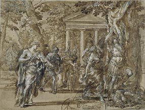

|
Roman
Baroque Drawings
The word 'Baroque'
probably derives from a Portuguese term for a misshapen pearl and
originally meant 'irregular or grotesque'. It has, however, come
to signify the dominant artistic style of the seventeenth century,
which originated in Rome in the 1620s and lasted until the end of
the century. It is closely associated with the names of Bernini
and Pietro da Cortona in painting and sculpture and with Borromini
in architecture, and has been called 'one of the most creative periods
of the whole history of Italian art'
.
The influence of the Catholic Church, which had been eroded during
the Protestant Reformation, was reaffirmed by a succession of powerful
popes, notably Urban VIII Barberini, Innocent X Pamphilj and Alexander
VII Chigi. The popes and their entourage triumphantly celebrated
the Catholic faith: new churches were built, old ones embellished,
and recently canonized saints such as Francis Xavier, Teresa of
Avila and Thomas of Villanueva glorified in paint and marble. An
emphasis on mystical inner experience resulted in numerous representations
of the martyrdom and religious ecstasy of saints.
Above:
Pietro da Cortona (1597-1669), Scene
from Tasso´s Jerusalem Liberated : Rinaldo Fleeing with Carlo and
Ubaldo from the Seductress Armida, c.1620,
Pen and brown ink and wash over black chalk, 200 x 341 mm, 1963-4-20-3
The Baroque
was also a time of worldly splendour, with enormous sums expended
on lavish palace and theatre decorations, fountains and extensive
urban planning. The interior of the Barberini Palace was decorated
by Andrea Sacchi and Pietro da Cortona; Grimaldi designed stage
sets for the adjacent theatre and countless noble families, among
them the Pamphilj, Chigi and Sacchetti, commissioned the building
and embellishment of country villas. The prospect of such papal
and aristocratic patronage attracted artists from all over Italy
and Europe. The arrival in Rome of Domenichino and Lanfranco from
Emilia, Gaulli from Genoa, the Cortese brothers from France, and
Schor and Seiter from Austria helped make Rome the artistic capital
of the time. Artists would meet at the homes of collectors and at
the Accademia di San Luca, a type of painter's club, where lessons
in life drawing and art-theoretical debates took place. Increasingly,
painters began to specialise in particular genres, with Giacomo
Cortese gaining renown for his battle scenes, Ottavio Leoni for
drawn portraits, and Onofri for landscapes.
Much of Baroque
painting and sculpture is characterised by drama, emotional expressiveness,
explicit gestures and spiralling or diagonal compositions, such
as one associates with the art of Bernini, Pietro da Cortona and
Gaulli. The epitome of this exuberant style is Cortona´s ceiling
fresco in the great hall of the Barberini Palace, which glorifies
the reign of Pope Urban VIII. There was always a more restrained
current, often labelled ´classical`, which harked back to the example
of Raphael and the High Renaissance and favoured symmetry, subdued
colours and fewer figures. This second trend is exemplified by the
work of Domenichino, Sacchi and the latter's pupil Maratti.
The British
Museum owns an excellent collection of drawings by more than forty
different artists from this period, covering all the major as well
as many of the lesser-known painters. There are print and medal
designs by Bernini relating to his remodelling of the Square and
Basilica of St Peter's (e.g. Plan of Colonnade, 1659; Medal
Commemorating the Cathedra Petri, 1662) as well as portraits
and drawings of catafalques - temporary structures erected in honour
of the deceased (Catafalque to the Duc de Beaufort, 1669). Two further
sculptors, Algardi and Cafà, are also represented. A strong group
of drawings by Pietro da Cortona documents nearly all his major
commissions, including the Villa Sacchetti at Castelfusano (Vulcan's
Forge, 1628), the Palazzo Barberini (Woman Carrying Fasces,
1630s) and the Chiesa Nuova (Prophets for the pendentives,
1659-60). The painters who trained in Cortona´s studio and flourished
in the second half of the century are represented by such important
works as Romanelli´s tapestry design of Dido and Aeneas (late
1630s), Gimignani´s Battles (1647), and Ferri´s Crucifixion
(1662). Sacchi´s studies for St Anthony raising a Man from the
Dead (1630s) and the Mola´s cartoon of a kneeling man and two
further studies in the Department for the fresco Joseph Greeting
his Brethren (1650s) relate to major commissions carried out
by these artists. There are also several drawings by Gaulli, who
worked in the tradition of Bernini, and by Maratti, the leading
artist of the late 17th century (e.g. Jael and Sisera for
the Presentation Chapel in St Peter's, 1670s/80s). Examples of the
draughtsmanship of Maratti´s followers dei Pietri and Passeri signal
the final years of the great Baroque tradition.
The collection
is particularly strong in finished compositional drawings. Numerous
portraits (by Leoni, Maratti), landscapes (Cortona, Grimaldi), caricatures
(Mola, Maratti), and designs for altarpieces, engravings (Canini,
Testa), sculpture (Algardi) and the decorative arts (Schor) serve
to illustrate the variety of the artistic production of the period.
A more thorough study of certain aspects is provided by three albums
containing, respectively, life drawings, most of which remain anonymous,
and studies by Grimaldi and Cortese. For sheer virtuosity Pietro
da Cortona's Jason and the Golden Fleece and his River
Landscape, Domenichino's Head of St Luke, Gaulli's Sangue
di Cristo (Resurrected Christ on Clouds with Angels)
and Ottavio Leoni's Self-portrait deserve a mention.
Other
Collections
| UK
|
Royal
Library, Windsor Castle |
| France
|
Louvre,
Paris |
| Germany |
Kunstmuseum,
Dusseldorf |
| Italy |
Istituto
Nazionale per la Grafica, Rome |
Further
Reading
*Turner,
N. with the assistance of Eitel-Porter, R. Roman Baroque Drawings
c. 1620 to c. 1700. 2 Vols. British Museum Press, 1999
Waterhouse,
E. Italian Baroque Painting. Phaidon, 1962
Rudolf
Wittkower, Art and Architecture in Italy 1600-1750. 3rd
ed. Harmondsworth, 1973
*Available
at The British Museum Bookshop or by ordering from The British Museum
Press, 46 Bloomsbury Street, London, WC1B 3QQ. Tel +44 020 7323
1234
|